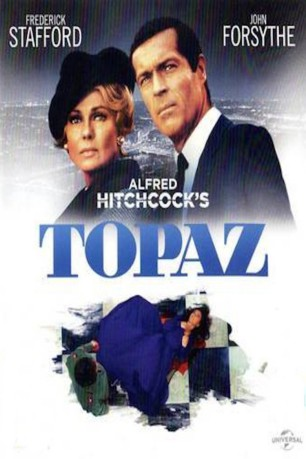

gesehen am 18.08.2015
gesehen am 18.08.2015Alternativ: Topaz gesehen am 18.08.2015
 
 IMDB-Wertung: 6.3 / 10
IMDB-Wertung: 6.3 / 10  Metascore:
Metascore: 
Michael Nordstorm hat die heikle Aufgabe, einen Oberst des KGB, der 1962 als Überläufer in die Vereinigten Staaten eingeflogen wird, dem amerikanischen Geheimdienst zu übermitteln. Zu seinem großen Entsetzen muß er feststellen, daß die Russen einen geheimen Ring hochkarätiger Agenten auf Kuba installiert haben. Dieser geheime Ring, der mit Decknamen TOPAS operiert, hat bereits begonnen, brisante Informationen der NATO an die russische Führungsriege des KGB über eine Basis in Paris nach Moskau weiterzuleiten. Einzig Nordstrom und seine französischen Mittelsmänner haben nun die Macht, TOPAS zu infiltrieren und zu entlarven. - Der 51. Film Alfred Hitchcocks basiert auf dem Roman "Topaz" von Leon Uris.
Jahr: 1969
Dauer: 143 Minuten
FSK: 12
Land: USA Studio: Universal PicturesTonspuren:
Untertitel: Deutsch,
Auflösung: 1080p (1920x1040) Größe: 8960 MB
Genre: Thriller
Regisseur:  Alfred Hitchcock
Alfred Hitchcock
Drehbuch: Leon Uris, Samuel A. Taylor
Soundtrack: Maurice Jarre
Darsteller:
 John Vernon als Rico Parra
John Vernon als Rico Parra Karin Dor als Juanita de Cordoba
Karin Dor als Juanita de Cordoba Michel Piccoli als Jacques Granville
Michel Piccoli als Jacques Granville Philippe Noiret als Henri Jarre
Philippe Noiret als Henri Jarre Roscoe Lee Browne als Philippe Dubois
Roscoe Lee Browne als Philippe Dubois Ann Doran als Mrs. Forsyth , uncredited
Ann Doran als Mrs. Forsyth , uncredited Alfred Hitchcock als Man in Wheelchair at Airport , uncredited
Alfred Hitchcock als Man in Wheelchair at Airport , uncredited Carlos Rivas als Hernandez
Carlos Rivas als Hernandez Henry Kingi als Man in Hotel Theresa hallway , uncredited
Henry Kingi als Man in Hotel Theresa hallway , uncredited Ben Wright als French Officer , uncredited
Ben Wright als French Officer , uncreditedDatei: X:\Person\Hitchcock\Hitchcock - Topas (1969, FSK12, 1920x1040).mkv seit 05.08.2015
Festplatte: HD Collection-7+mehr(A-Z)+Person
 Es gibt insgesamt 25 Filme in der Gruppe 'Person\Hitchcock'
Es gibt insgesamt 25 Filme in der Gruppe 'Person\Hitchcock'